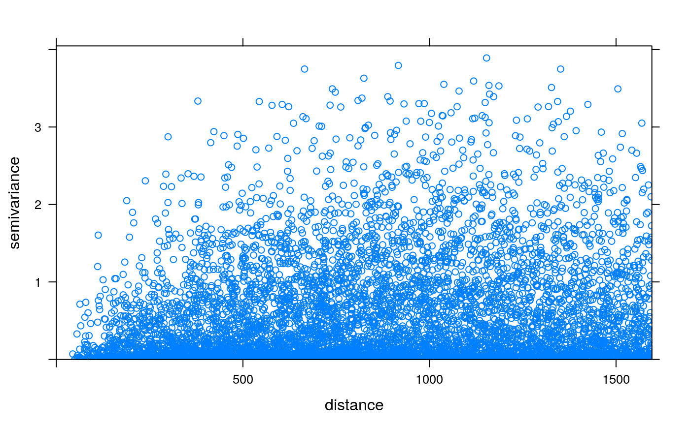

plot.variogramCloud.RdPlot a sample variogram cloud, possibly with identification of individual point pairs
# S3 method for variogramCloud plot(x, identify = FALSE, digitize = FALSE, xlim, ylim, xlab, ylab, keep = FALSE, ...)
| x | object of class |
|---|---|
| identify | logical; if TRUE, the plot allows identification of a series of individual point pairs that correspond to individual variogram cloud points (use left mouse button to select; right mouse button ends) |
| digitize | logical; if TRUE, select point pairs by digitizing a region with the mouse (left mouse button adds a point, right mouse button ends) |
| xlim | limits of x-axis |
| ylim | limits of y-axis |
| xlab | x axis label |
| ylab | y axis label |
| keep | logical; if TRUE and |
| ... | parameters that are passed through to plot.gstatVariogram (in case of identify = FALSE) or to plot (in case of identify = TRUE) |
If identify or digitize is TRUE, a data frame of class
pointPairs with in its rows the point pairs identified (pairs of
row numbers in the original data set); if identify is F, a plot of the
variogram cloud, which uses plot.gstatVariogram
If in addition to identify, keep is also TRUE, an object
of class variogramCloud is returned, having attached to it attributes
"sel" and "text", which will be used in subsequent calls to plot.variogramCloud
with identify set to FALSE, to plot the text previously identified.
If in addition to digitize, keep is also TRUE, an object of
class variogramCloud is returned, having attached to it attribute
"poly", which will be used in subsequent calls to plot.variogramCloud
with digitize set to FALSE, to plot the digitized line.
In both of the keep = TRUE cases, the attribute ppairs of
class pointPairs is present, containing the point pairs identified.
variogram, plot.gstatVariogram, plot.pointPairs, identify, locator
## commands that require interaction: # x <- variogram(log(zinc)~1, loc=~x+y, data=meuse, cloud=TRUE) # plot(plot(x, identify = TRUE), meuse) # plot(plot(x, digitize = TRUE), meuse)